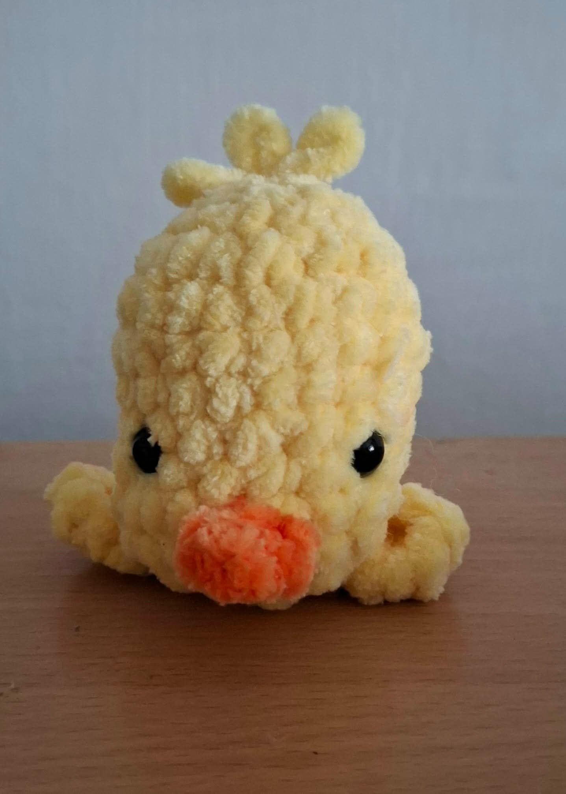

Amigurumi csibe – horgolásminta
Egytestes figura csőrrel, szárnnyal, bóbitával; az összevarrás gyakorlása. Kb. 2 óra.

Amire szükséged lesz
- Közepes vastagságú fonal: sárga (15 g), narancs (2 g)
- 2 db 6 mm-es biztonsági szem (vagy fekete fonal hímzéshez), tömőanyag, 3,5 mm tű, szemjelölő, varrótű
Rövidítések
| | US | UK |
|---|
| lsz | láncszem | ch | ch |
| ksz | kúszószem (hamis láncszem) | sl st | ss |
| rp | rövidpálca | sc | dc |
| fogy | fogyasztás: 2 rövidpálca összehorgolva | sc2tog | dc2tog |
| szap | szaporítás: 2 rövidpálca ugyanabba a szembe | inc | inc |
| vgy | varázsgyűrű | MR | MR |
| szem | szem(ek) | st(s) | st(s) |
Tudnivalók
- Csigavonalban (spirálban) horgolunk, a köröket nem zárjuk. Jelöld a kör elejét szemjelölővel.
- 3 év alatti gyereknek biztonsági szem helyett hímezd a szemeket.
Ábrák: kész forma és horgolásrajz
Kész forma és összeállítás
Test 1–4. kör felülről (szaporítás)
Test (sárga)
1. kör
Varázsgyűrű, 1 lsz, 6 rp a gyűrűbe. Húzd össze.
(6 szem)
2. kör
Minden szembe szaporítás.
(12 szem)
3. kör
*1 rp, 1 szap.* Ismételd 6-szor.
(18 szem)
4. kör
*2 rp, 1 szap.* Ismételd 6-szor.
(24 szem)
5–10. kör
Minden szembe 1 rp (6 kör). A 4. és 5. kör között tedd be a szemeket, 5 szem távolságra egymástól (a varázsgyűrű a fej teteje).
(24 szem)
11. kör
*2 rp, 1 fogy.* Ismételd 6-szor.
(18 szem)
12. kör
*1 rp, 1 fogy.* Ismételd 6-szor. Töltsd ki a testet.
(12 szem)
13. kör
Minden 2 szemet fogyassz össze. Húzd össze a nyílást.
(6 szem)
Csőr (narancs)
1. kör
Varázsgyűrű, 4 rp.
(4 szem)
2. kör
*1 rp, 1 szap.* Ismételd 2-szer. Vágd el hosszú szállal, ne töltsd ki.
(6 szem)
Szárny (sárga, 2 db)
1. kör
Varázsgyűrű, 6 rp.
(6 szem)
2. kör
*1 rp, 1 szap.* Ismételd 3-szor. Hajtsd félbe laposra, vágd el hosszú szállal.
(9 szem)
Befejezés
- Varrd a csőrt a 6. körbe, középre a két szem alá.
- Varrd a szárnyakat a test két oldalára, a 7. kör magasságában.
- Bóbita: a fej tetején (a varázsgyűrűnél) húzz át 3 sárga szálat, csomózd meg, és vágd 1,5 cm-esre.